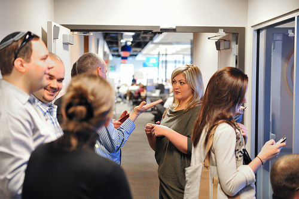

Private & Semi-Private Instruction

Private instruction is a great way to get individual attention to help you meet your goals and take your training to the next level.
Hover hereiKrav Teen Street Smart